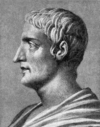
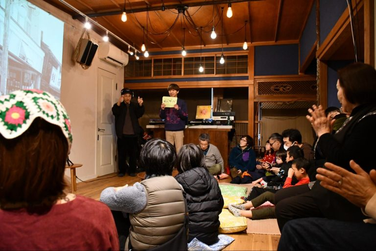
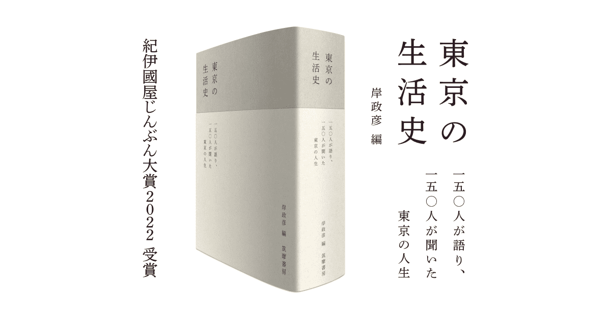
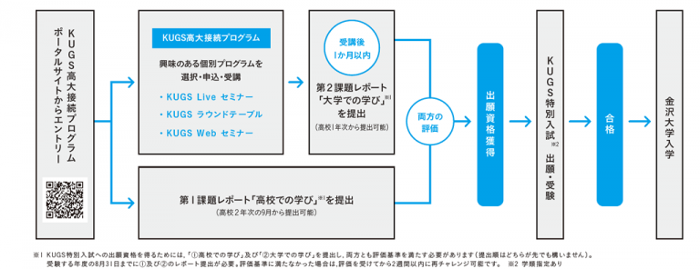

論点整理・コメント 探究学習と大学での学び
「探究的な学び」に棲む二つの象を思想史から問い直す
![]()
October 28, 2026
人の知的活動も畑と同じである。種をまき、長い時間をかけて手を入れれば、さまざまなものを育てることができる。だが、私たちがより好むのは、おのずから生まれたものである。

Ⅰ. はじめに
自己紹介
- 専門：政治思想史
- 18世紀イギリスの議会政治：レトリック受容と新興メディア
- 聞き手を説得する技法の受容（キケロ；サルスティウス；タキトゥス）
- 18世紀イギリスの議会政治：レトリック受容と新興メディア
高大接続コア・センターに関わる業務
- 高大接続リーディング・セミナー
- 本で拓く探究ワークショップ
- 高大接続ラウンドテーブル
- 高大接続に関わる追跡調査
その他
- 前任校において「PBL（問題解決型学習）」や初年次教育に長く携わる
探究をめぐる、私が経験したモヤモヤ
- あるワークショップでの高校の先生
- 「生徒が、私にも読めないような分厚い本をしっかり読んで探究学習に取り組んでいる。見方によっては本をまとめているだけに見えるが、簡単なことを行なっているようにはとても思えない。華々しい実験だけが評価されるのはおかしいのではないか」
- あるワークショップでの生徒
- 「大人が解決できないような問題を、高校生が解決できるわけないよね笑」
- ポスターセッションにおいて他校の生徒に質問する高校の先生
- 「先行研究がもうあるんじゃないの？」
Ⅱ. 部屋の中の象：探究とは何か
部屋の中の象
- そこにあるのに、なぜか誰も正面から扱わない問題
- なぜパーティールームに象がいるの？
- そもそも探究とは何かが十分に問われていない

既存の定義の類型
1. 文部科学省の「探究」を参照した定義
- 探究そのものと、探究を支える要素・目的が一体化している
- 次期学習指導要領では、以下の定義が「探究の考え方」として示される予定である 1
実社会・実生活との関わりの中で見いだす自己の興味・関心や問題意識に基づき課題を設定し、必要な知識や方略を活用し、試行錯誤しながら、課題解決を通じた新たな価値の創造を繰り返していく学習のプロセス」（教育課程部会 生活、総合的な学習・探究の時間ワーキンググループ）。
既存の定義の類型
2. 学術研究に準拠した定義
「①自ら問題を発見し、②調査・観察・実験などによって事実を明らかにし、③事実にもとづいて論理的・批判的な思考・判断を行い，④導いた結論を表現したり、問題を解決したりする学習活動」（楠見，2017, p.68）。
- 新規性は問わず、研究の作法を学ぶ営み
- 「調べ学習 → 探究学習 → 学術研究」という段階的な発達モデルを暗黙に想定 1
- → より良い探究学習のモデルは学術研究：「探究公害」の主要因に（特別入試はこの傾向に拍車をかける）
既存の定義の類型
- 社会で必要とされる能力を意識した定義：「課題解決のサイクル」を身につける
本質的には「大人が日々社会で生きていくためのベース」を訓練しているのだと考えています。私たちは社会に出て組織で働くようになると、社会課題を解決したり、誰かの不安や不満を解消したりすることをビジネスとして展開し、その対価として生活の糧を得るようになります。この一連の「課題解決のサイクル」は、今の社会構造のなかで生きていく以上、一生やり続けざるを得ないものです。」（リクルート進学総研「探究は自ら打席に立ちバットを振るトレーニング」）
Ⅲ. 盲人と象：見落とされる探究活動の複数性
群盲象を評す
- 皆が同じものを見ているつもりで、実際には別々のものを論じている
- 「探究学習はこうあるべきだよね」と言わなくても、特定の考えを前提に置いている
- 対象や目的によって、探究そのものの性質が異なることを見ていない
- 文理の壁を想定
偽物
aa
| 規則性の発見 | 固有性の記述 | |
|---|---|---|
| 再現可能性が高い | 仮説検証型「他の犬でも、大きな音と隠れる行動には同じ関係が見られるのだろうか？」 対象を広げて比較し、犬一般に見られる規則性を探る |
特徴からの仮説形成「雷が鳴るときだけでなく、花火や大きな音でも同じ行動をするのでは？」 条件を変えたり、繰り返し観察したりして、その犬に見られる特徴をより明確にする |
| 再現可能性が低い | 事例・出来事からの仮説形成「大災害を経験した犬には、その後、特徴的な行動が現れるのではないか？」（逸脱事例） | 探索・解釈からの仮説形成「うちの犬は、雷が鳴ると隠れる。いつから、どんな状況でそうするのだろう？。まずは一匹の犬について、その個別の経験や行動を詳しく見ていく |
問いの更新
| 規則性の発見 | 固有性の記述 | |
|---|---|---|
| 再現可能性が高い | ① マスコットと集客の関係を調べる「どのような条件で、マスコット・キャラクターが商店街への来訪者を増やすのか？」複数の商店街やイベントを比較し、キャラクターの知名度、イベント、SNSでの拡散、来訪者数などの関係を調べる。 | ② この商店街にどんなマスコットが合うのかを調べる「この商店街の来訪者は、どのようなキャラクターを好むのか？」複数のデザインを提示して反応を調べたり、年代・利用目的による違いを比較したりする。 |
| 再現可能性が低い | ③ 過去・他地域の事例から仮説を探る「商店街にマスコットを導入したことを契機に、集客や地域イメージが変化した事例には、どのような共通点があるのか？」過去の成功・失敗事例、地域イベントなどを比較し、どのような条件が作用したのかを探索する。 | ④ この商店街そのものを理解する「なぜ、この商店街には人が来なくなったのか？」商店街の歴史、店舗構成、利用者、地域住民の経験、立地、交通、周辺施設などを調べ、この商店街固有の状況を理解する。 |
N1の魅力
石引商店街「石引ゲバゲバ音頭」制作
VIDEOTAPEMUSIC：若い人、外から来た人ばっかり盛り上がっちゃって、まちに住んでいる人を置き去りにしていたり、輪に入れない空気になったりしたら嫌だなと思ったけど、そんなことはなくて。それはもうほんとにモカさんととわさん（※）をはじめとした商店街のみなさんの力があったからで、「ああこれは、僕も安心して乗っかれるな」っていう感覚はありました。石引自体にそういう安心感がありましたね。外から来た人と地元の人たちがちゃんと仲良くやっているまちだなって（今と昔の重なるまち、未来につなぐひとつの音頭｜VIDEOTAPEMUSICさん）。

N1の魅力
生活史
「１５０人が語り、１５０人が聞いた、東京の人生」。いまを生きるひとびとの膨大な語りを一冊に収録した、かつてないスケールで編まれたインタビュー集（岸政彦編集『東京の生活史』）。

スケジュール
| 時間 | 内容 |
|---|---|
| 13:00〜13:20 | イントロダクション：スケジュールと自己紹介 |
| 13:20〜13:30 | リーディング・セミナーって何？：趣旨説明と目標 |
| 13:30〜14:15 | （45分）課題図書：著者情報と意見の共有 |
| 14:15〜14:30 | 休憩 |
| 14:30〜16:30 | （120分）紹介文の作成 |
| 16:30〜17:00 | 振り返りと案内 |
高大接続プログラム フローチャート
